블로거 소개
- 블로거|쿠쿠이
- 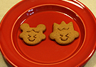
- 베이킹을 할수록 행복 지수가 높아져 달콤한 매력에 빠져 있어요. 마법의 베이킹에서 빠져나오는 대신, 행복한 베이킹의 매력을 많은 분들과 느끼고 공유하고 싶어 시작했어요. 건강하게 먹거리를 만드는 베이킹 속으로 함께해요.
질문과 답변
- 닉네임에 얽힌 사연이 있나요?
- 예전에 하와이에 잠시 살았던 적이 있는데요, 그때 Kukui st.(쿠쿠이 스트리트)에 살았어요. 사실 쿠쿠이는 쿠쿠이 나무(Candlenut Tree)를 말하는 것인데요, 저는 그 나무를 생각해서 닉네임을 지었기보다는 하와이 Kukui st.에 살았던 추억을 오래 간직하고자 닉네임을 쿠쿠이로 짓게 되었답니다.
- 처음으로 요리를 즐기게 된 계기가 있으신가요?
- 어릴 때부터 항상 건강에 좋은 요리, 베이킹 또는 음료에 많은 관심이 있었어요. 그러다 3년 전에 '내 손으로 직접 건강한 베이킹에 도전해보자'는 생각에 갑작스럽게 시작하게 되었답니다. 사먹는 것보다 맛도 좋고 건강하니 식구들도 좋아하고요, 주변 분들에게 선물하면 참 좋아하시더라고요. 베이킹으로 작은 마음을 나눌 수 있다는 즐거움에 빠져 베이킹을 더욱 사랑하게 되었습니다.
- 어떤 요리를 주로 하시며, 가장 좋아하는 요리는 무엇인가요?
- 베이킹을 가장 많이 하고, 가장 좋아하는 것도 베이킹에요. 베이킹 중에서는 치즈케이크와 발효빵 종류를 많이 만들고요. 치즈케이크는 고급스러운 선물로 좋고 맛도 좋아 식구들도 가장 좋아하는 아이템이에요. 또한 아침에 빵을 먹는 쿠쿠이네 식구들을 위해 발효빵도 많이 굽는 편이랍니다.
- 나만의 특별한 요리 비법이 있다면?
- 특별한 비법이라기 보다는 건강을 위해, 레시피에 비해 최대한 설탕을 줄이고 설탕도 유기농 비정제 설탕을 사용하고 있어요. 혹은 설탕 대신 메이플 시럽이나 꿀을 사용하기도 하고요. 밀가루도 수입산이 아닌 우리 밀가루를 사용하고 항상 통밀가루를 섞어서 사용하려고 노력해요. 사실, 신선하고 좋은 재료를 쓰면 그만큼 맛이 좋아지더라고요. 하지만 무엇보다 중요한 것은 베이킹을 할 때 정성과 사랑을 가득 담아 하는 것이라 생각해요. 같은 레시피로 만들어도 사랑과 정성이 가득하면 빵이 더욱 맛있어 지는 것을 확연히 느꼈기 때문에, 가장 특별한 요리 비법은 무엇보다 사랑과 정성이라고 믿고 있답니다.
- 브라우니 치즈케이크
- 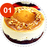
- 진하고 달콤한 브라우니와 촉촉하고 부드러운 치즈케이크를 한 번에 즐길 수 있는 세련되고 맛있는 케이크랍니다. 여성 분들이 좋아해요.
레시피 보기
- 사워크림 초콜릿 케이크
- 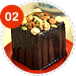
- 촉촉하면서도 진한 초콜릿 맛이 일품인 케이크에요. 견과류가 토핑으로 잔뜩 올려져 있어서 몸에도 좋고 보기에도 좋은 케이크랍니다.
레시피 보기
- 천사가 먹는 엔젤 푸드 케이크
- 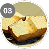
- 새하얀 속 살이 눈부셔 천사가 먹는다는 엔젤 푸드 케이크. 달걀 흰자만으로 만들어 칼로리도 적고, 쫄깃하면서도 부드러운 케이크랍니다.
레시피 보기
- 크림치즈 올리브 머핀
- 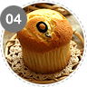
- 크림치즈와 올리브가 만나 매력이 있는 머핀이에요. 촉촉하고 부드러워 머핀이 아니라 컵케이크를 먹는 듯한 착각이 드는 머핀이지요.
레시피 보기
- 오렌지 마멀레이드 커스터드 빵
- 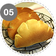
- 커스터드 크림과 오렌지 마멀레이드가 만나서 맛이 한 층 업그레이된 상큼한 크림빵이에요, 질리지 않고 맛있는 빵이랍니다.
레시피 보기
- 요구르트 후르츠 브레드
- 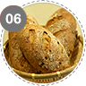
- 요구르트의 천연 효모를 이용해서 만든 건강빵이에요. 견과류와 건과일이 많이 들어가 더욱 건강에 좋은 천연 효모 빵이랍니다.
레시피 보기
- 통밀 메이플 쿠키
- 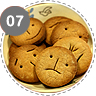
- 버터도 설탕도 들어가지 않았지만 통밀의 고소한 맛과 바삭한 맛을 한껏 느낄 수 있는 건강 쿠키에요. 못난이 얼굴로 재밌는 쿠키랍니다.
레시피 보기
- 고소한 검은깨 스틱 (No 버터)
- 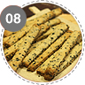
- 버터가 들어가지 않아 맛이 깔끔하고 건강도 챙길 수 있는 검은깨 스틱이에요. 검은깨의 고소함이 입 안에 가득 남는 매력적인 쿠키지요.
레시피 보기
- 콘밀 비스코티
- 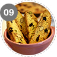
- 삭하게 씹히는 맛이 일품인 비스코티에요, 콘밀이 들어가 바삭하고 피스타치오가 들어가 고소하며, 크랜베리의 맛이 일품이지요.
레시피 보기
- 살살 녹는 메이플 크림치즈 푸딩
- 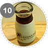
- 입에 넣으면 살살 녹는 맛이 일품인 메이플 크림치즈 푸딩이에요. 바닐라빈이 직접 들어가 은은한 바닐라향이 솔솔 새어 나온답니다.
레시피 보기